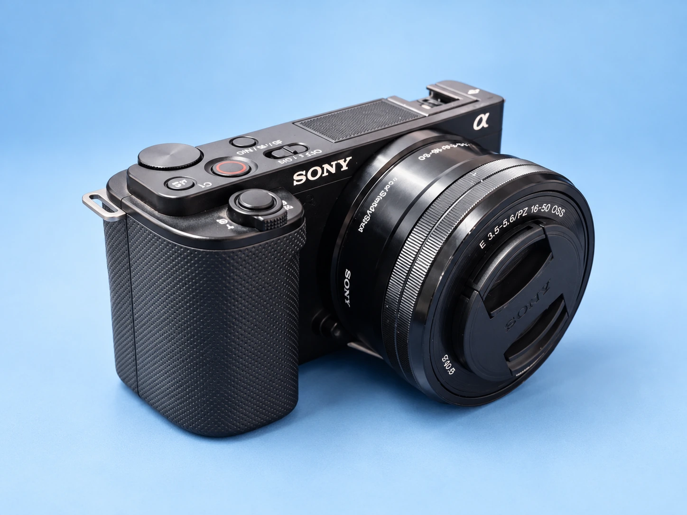
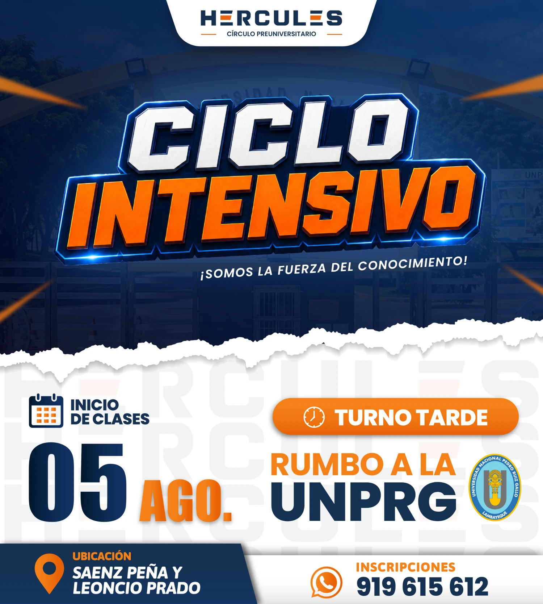
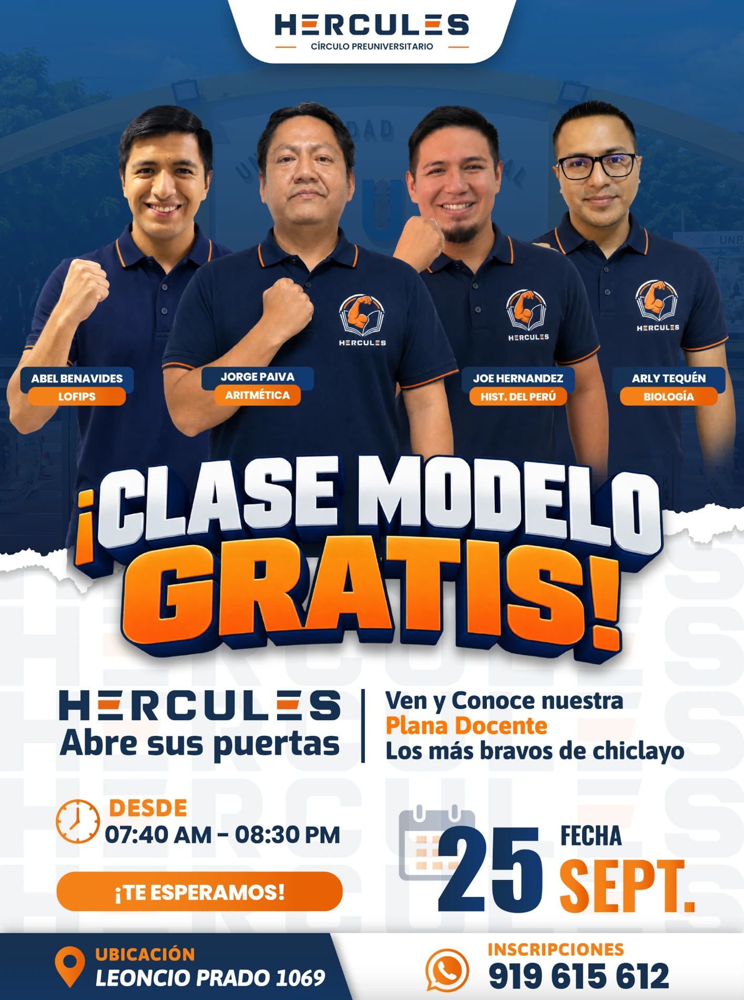
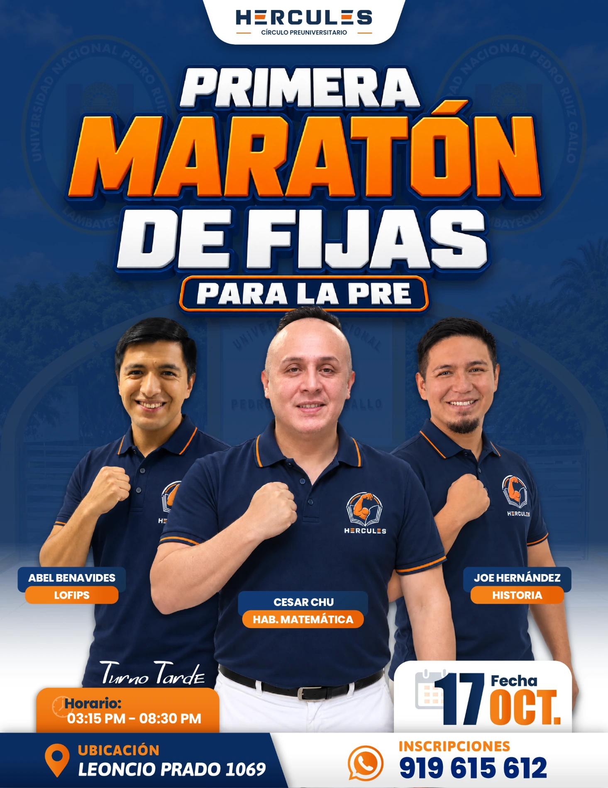
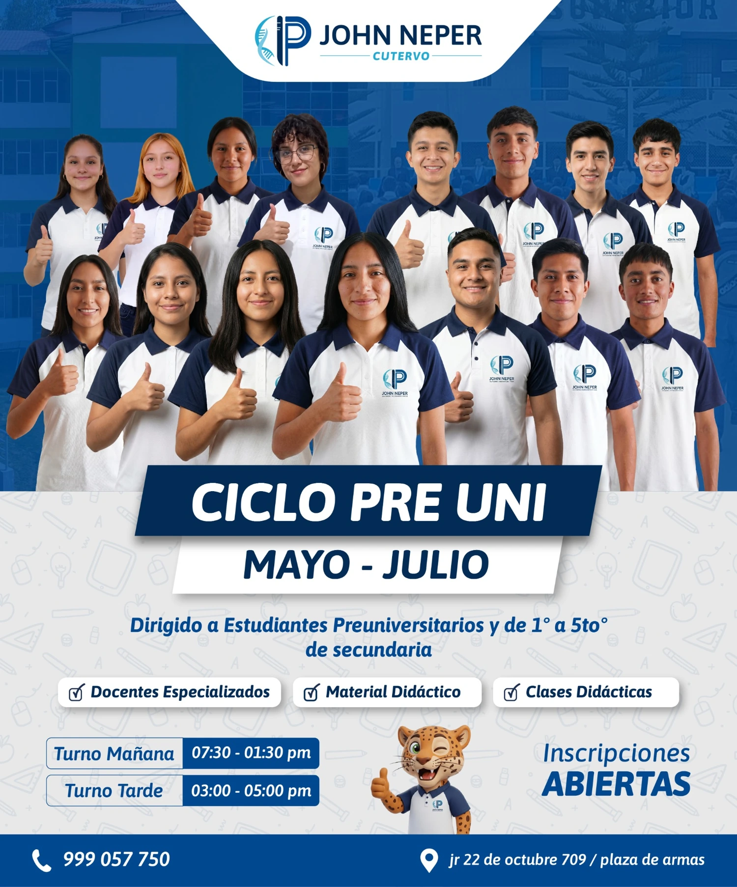
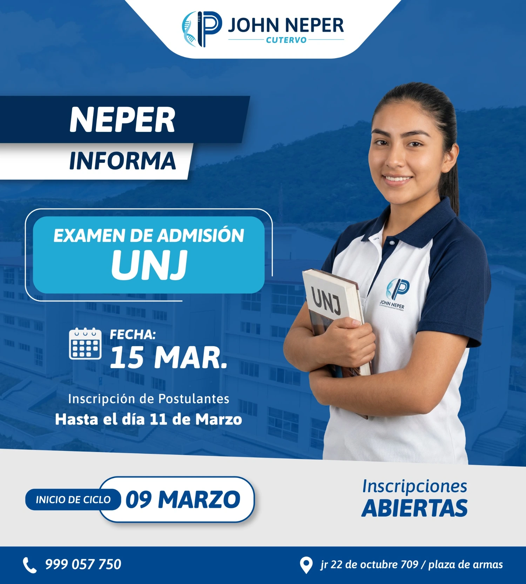
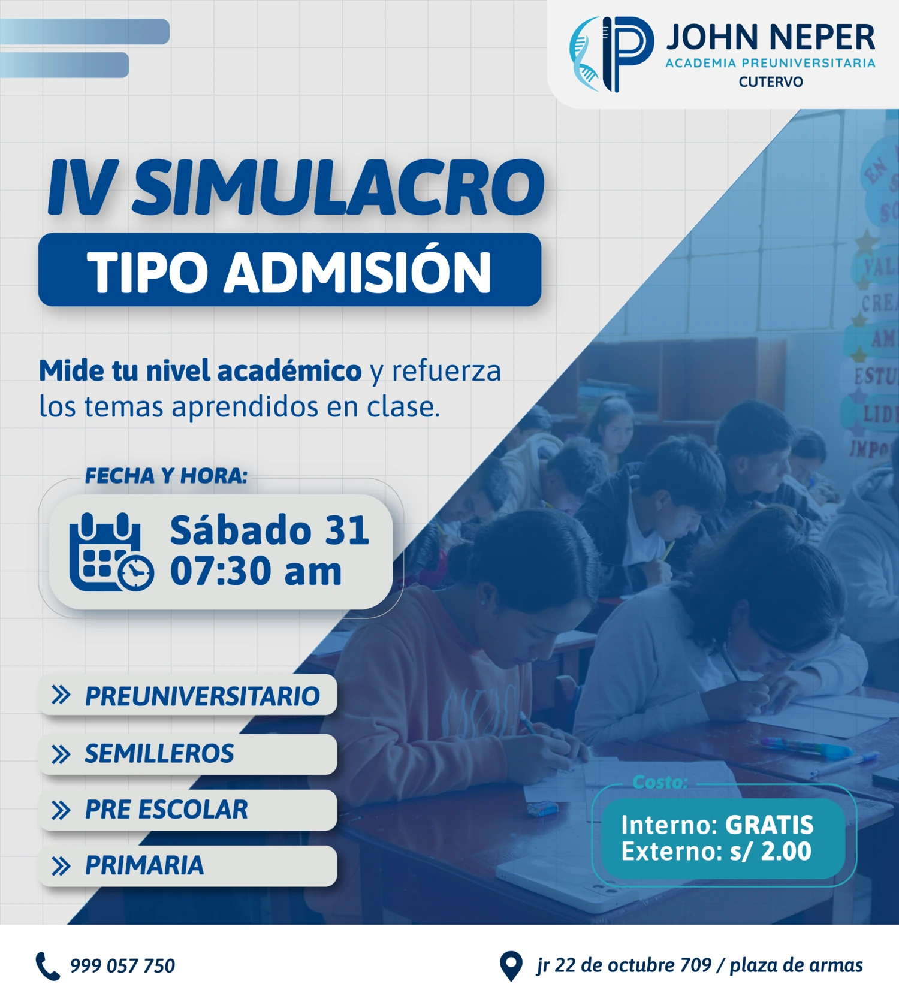

Diseño publicitario
Piezas para redes, campañas y eventos. Composición, tipografía y color al servicio de cada marca.
De una idea a una pieza visual.PORTAFOLIO PERSONAL / CURRÍCULUM CREATIVO
Soy Emil Heredia. Convierto ideas en diseño publicitario y contenido audiovisual que conecta con las personas.
Me dedico al diseño publicitario, la creación de contenido y la edición de video. Mi experiencia con academias y proyectos digitales me ha permitido llevar ideas a piezas que informan, presentan y promocionan.
He administrado las cuentas de TikTok de Academia Hércules y Academia John Neper como creador de contenido. Me involucro en el proceso creativo: pensar qué contar, darle forma y cuidar cómo se ve.
Piezas para redes, campañas y eventos. Composición, tipografía y color al servicio de cada marca.
De una idea a una pieza visual.Grabación con cámara profesional y edición en CapCut, con atención al ritmo, los subtítulos y la narrativa.
De la toma al corte final.Conceptos, guiones e ideas de videos para comunicar con claridad y darle personalidad a cada publicación.
De un mensaje a una historia.LAS HERRAMIENTAS
DETRÁS DEL TRABAJO

Trabajo con cámara profesional para llevar el contenido más allá de la pantalla de edición. Cuido el encuadre, la intención de cada toma y la forma en que se cuenta la idea.
Contenido para conectar.
Diseño para hacerse ver.
Estas son algunas de las piezas que he creado.

Campaña de inscripciones

Promoción de evento académico

Comunicación de seminario

Campaña de inicio de ciclo

Contenido informativo

Promoción de actividad académica
En Álgebra con Emil pruebo ideas y muestro mi avance en edición. Es una muestra personal para explorar el ritmo, los recursos visuales y distintas formas de presentar contenido.
@algebra_con_emil en TikTok, abre en otra pestañaPara propuestas de trabajo, colaboraciones o un nuevo proyecto, puedes contactarme directamente.